SAS-SCHULZ-MC1
VAST Challenge 2024
Challenge 1
Team Information
Team members:
- Falko Schulz, SAS Institute, Falko.Schulz@sas.com (PRIMARY)
- Stu Sztukowski, SAS Institute, Stu.Sztukowski@sas.com
- Amy Becker, SAS Institute, Amy.Becker@sas.com
Student team?
No
Analytics tools used:
- SAS Visual Analytics
- SAS Visual Text Analytics
- NETWORK Procedure from SAS Visual Data Mining and Machine Learning
Approximately how many hours were spent working on this submission in total?
100 hours
May we post your submission in the Visual Analytics Benchmark Repository after VAST Challenge 2024 is complete?
Yes
Video
Questions
Question 1 | Question 2 | Question 3 | Question 4
Your task is to develop visual analytics approaches that FishEye analysts can use to verify the facts included in their knowledge graph are representative of facts stated in the source text. Analysts should be able to compare consistency of the extracted knowledge with the source and identify and trace sources of bias in the data. Novel use of large language models (LLMs) as part of a visual analytics process is encouraged.
Note: the VAST challenge is focused on visual analytics and graphical figures should be included with your response to each question. Please include a reasonable number of figures for each question (no more than about 6) and keep written responses as brief as possible (around 250 words per question). Participants are encouraged to new visual representations rather than relying on traditional or existing approaches.
NOTE
The answer form contains interactive visualizations that rely on content hosted on GitHub pages and CDNs. If you encounter issues with these visualizations first try viewing in Chrome and disabling any ad blocking. If the interactive visuals still do not work a static fallback version can be forced by clicking this link:
1Use novel visualizations and visual analytic workflows to examine the bias in each news source. Create visualizations to help FishEye analysts understand how bias in the original sources changes over time. You may use the knowledge graph extracts and may use a large language model to supplement your understanding.
The first step in detecting overall bias involved conducting sentiment analysis on the extracted news sources. By employing a sentiment analysis algorithm and examining the date each article was first added to the knowledge graph, we could gauge whether the articles were generally positive, neutral, or negative over time. We observed that the articles from all three sources were predominantly positive, with Haacklee Herald having the highest percentage of negative articles at 6.4%. Specifically, we found that articles about Murray, Friedman and Wall, Vasquez, Chaney and Martinez, and Wilcox-Nelson were negative in Haacklee Herald, yet positive in Lomark Daily and The News Buoy during the same period. This indicates that certain newspapers may exhibit a negative bias towards specific entities.
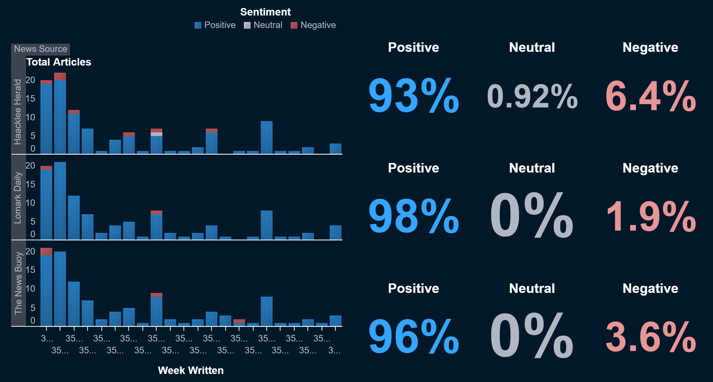
Most articles contained biased or loaded language as identified by a large language model (LLM), with "Respected," "Commitment to environmental stewardship," and "Legit" being the top three most loaded terms. The LLM observed that almost all of these loaded words had positive connotations, with very few negative ones.
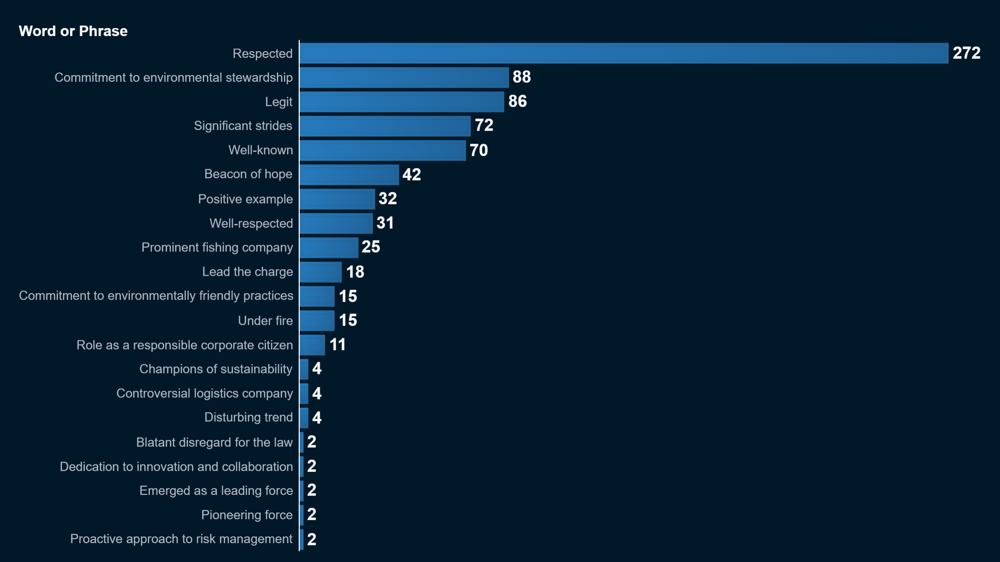
Sentiment analysis was subsequently conducted on particular events within the knowledge graph. We observed that certain entities might display a transition from negative to positive events solely within the News Buoy. For instance, NyanzaRiver Worldwide AS and V. Miesel Shipping both experience a shift from negative to positive events over time in The News Buoy.
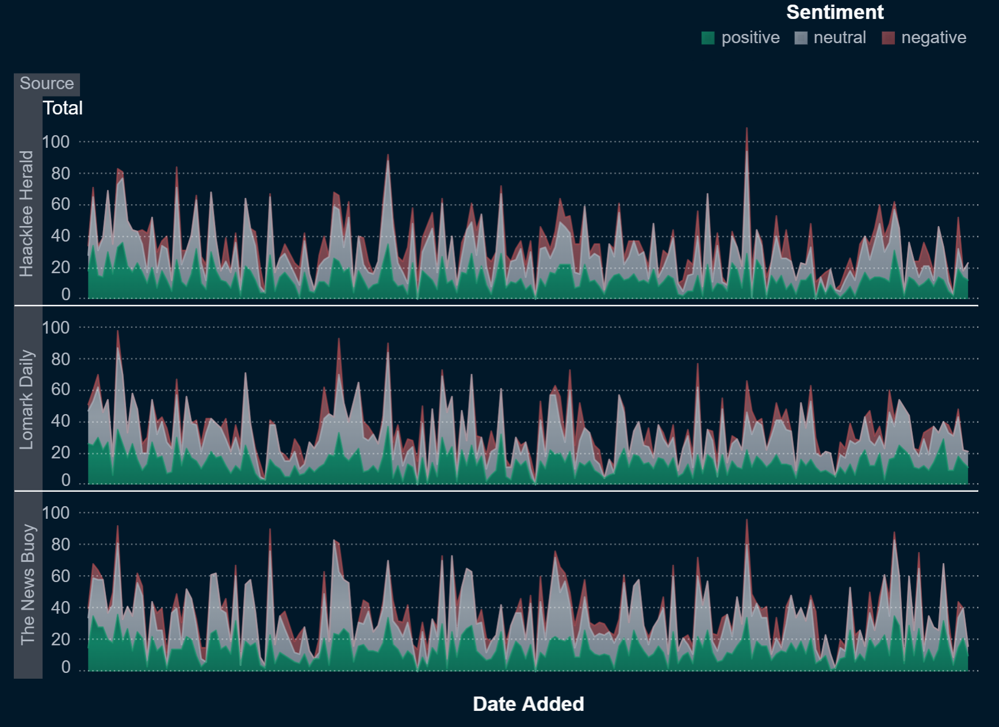
We discovered that SouthSeafood Express was unexpectedly missing as an entity in related article filenames. However, within the knowledge graph, SouthSeafood Express is exclusively associated with positive events.
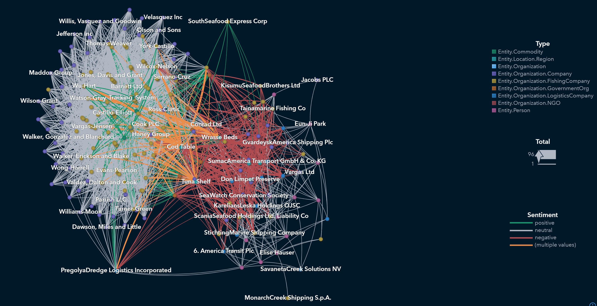
While we discovered that most events are either neutral or positive, the majority of negative events seem to originate from police report tables rather than the extracted articles themselves. Considering the positive sentiment of the articles, the neutral-to-positive sentiment of the events, and the tendency for event sentiment to become more positive over time for certain companies, we believe there is an overall positive bias within the knowledge graph.
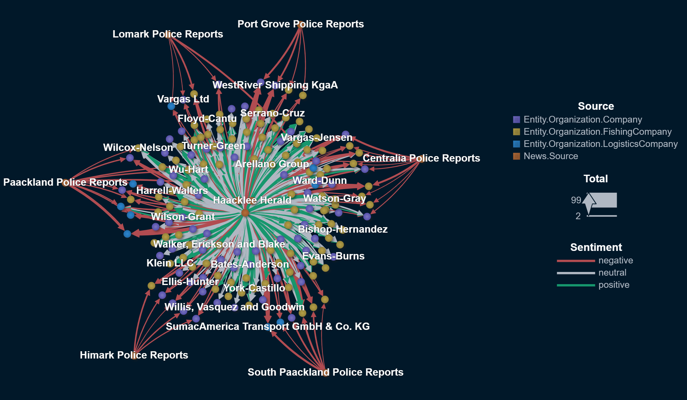
2 FishEye uses two LLM extraction algorithms: ShadGPT and BassLine. Develop visualizations to compare the bias of each algorithm. Though not required, you may develop your own LLM-based extraction and include it in the comparison.
When examining event sentiment using different algorithms, we observe that the results are quite similar overall, even across various studies. The sentiment of events tends to be generally positive or neutral, with few negative events.
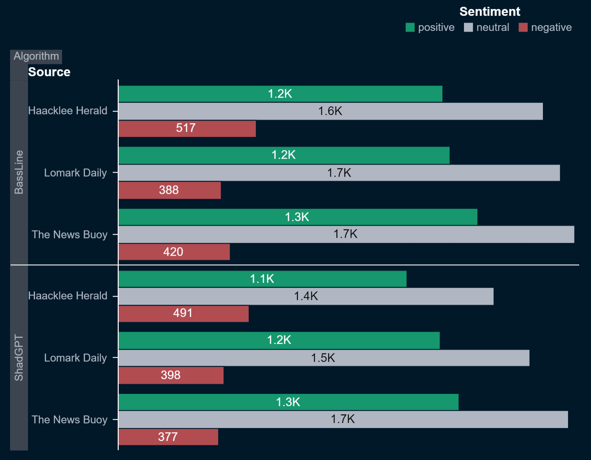
When comparing the behavior of each algorithm regarding sentiment per entity, the outcomes are quite similar. Both algorithms produce comparable results, indicating no evident bias towards either one.
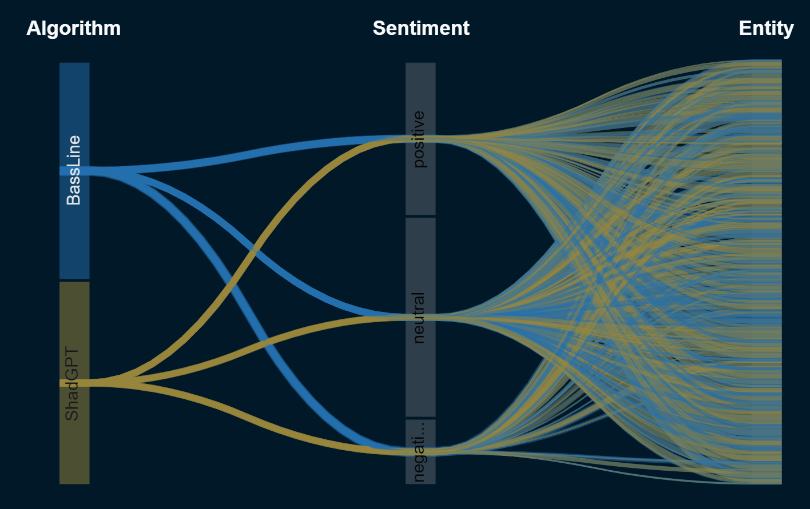
We observed that certain edges were more frequently associated with one algorithm over another, but we did not identify any issues of concern. Nonetheless, some entities had edges that were exclusively comprised of ShadGPT, specifically:
- Collins, Johnson and Lloyd
- Irtysh Creek Logistics
- Underwood Inc
Irtysh Creek Logistics received a summons and faced criticism for over-fishing, whereas the other two entities experienced only positive or neutral feedback.
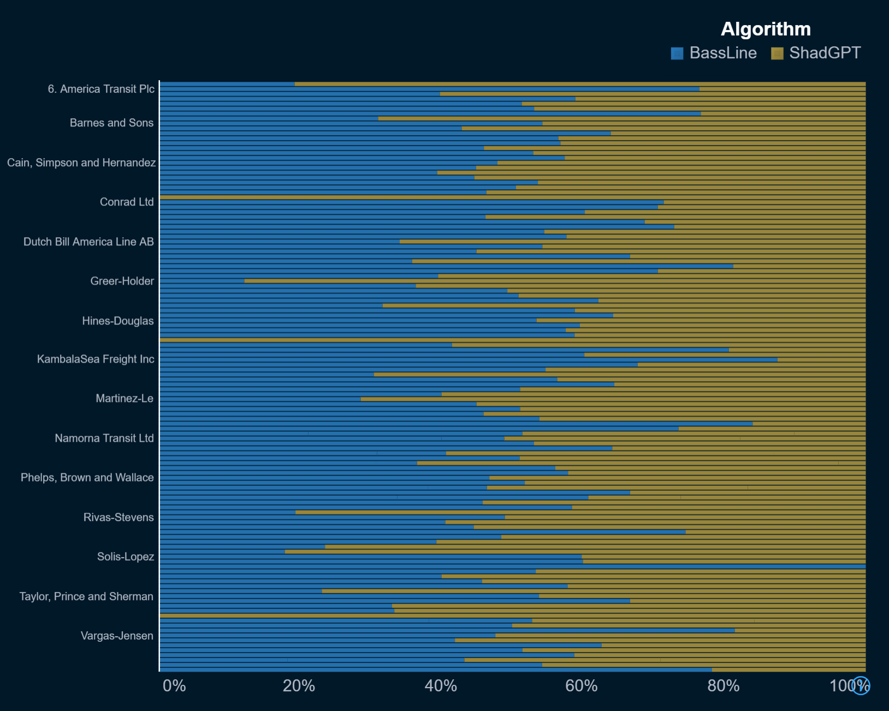
Based on the results from Q1, we believe that either the extraction algorithms or the analysts tend to have a positive bias. However, the knowledge graph suggests that neither is more biased than the other.
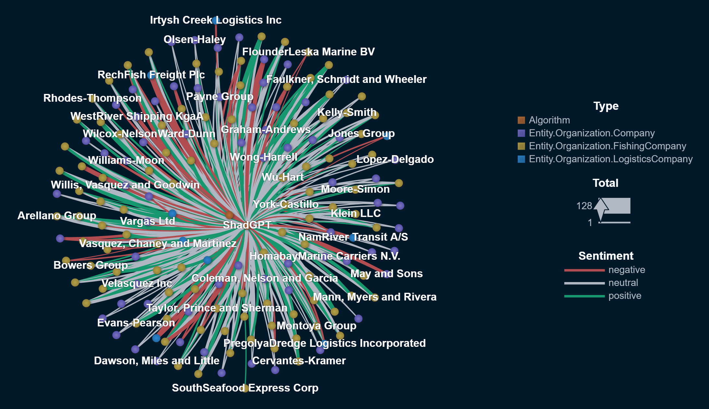
3 FishEye is also interested in understanding the reliability of their human analysts. Use visual analytics to examine potential analyst bias. Provide visual examples of the types of bias present.
Upon initial inspection, analysts generally exhibit comparable sentiment towards the event, without any noticeable exceptions.
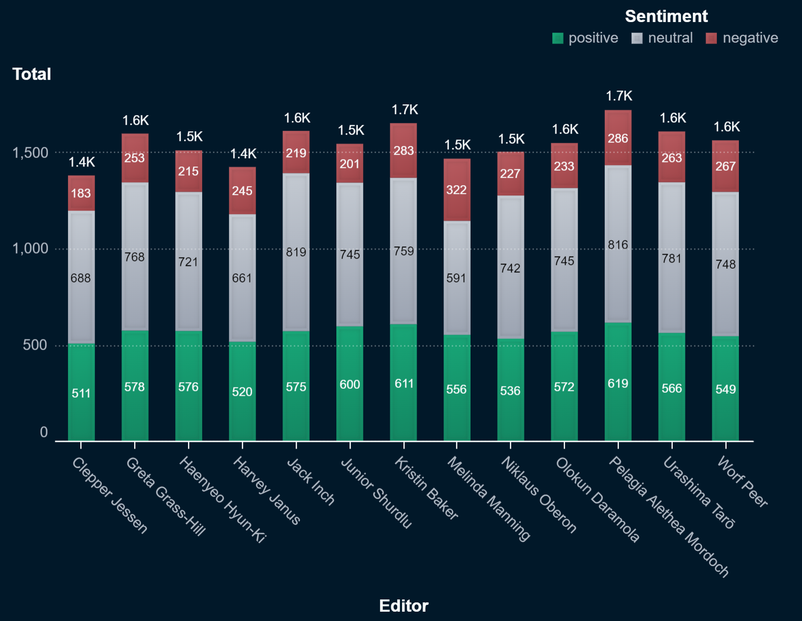
However, Harvey Janus devoted an unusually large amount of time to editing compared to the others. Upon examining Harvey's editing activity, it becomes evident that he dedicated a significant portion of time to editing one specific entity: SouthSeafood Express. All the edits exclusively favor SouthSeafood Express, and Harvey is its sole editor.
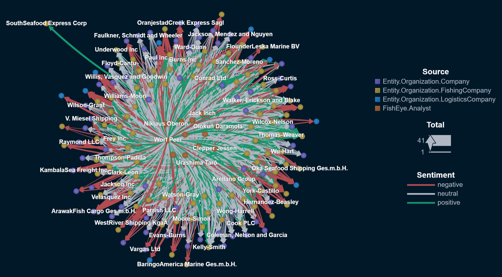
Based on the evidence presented, we trust most editors except Harvey Janus, who may be introducing bias into the knowledge graph.
4 Identify unreliable actors: news sources, algorithms, or analysts. Use visualizations to provide evidence for your conclusions. Can you use the data provided and a visual analytics workflow to determine who else may be involved?
Harvey Janus is strongly suspected of introducing bias into the knowledge graph, and there are concerns he may be trying to enhance the reputation of SouthSeafood Express through deceptive methods. As indicated in Q3, Harvey Janus is the sole editor responsible for SouthSeafood Express in the knowledge graph, dedicating more than 72 hours to editing this entity alone.
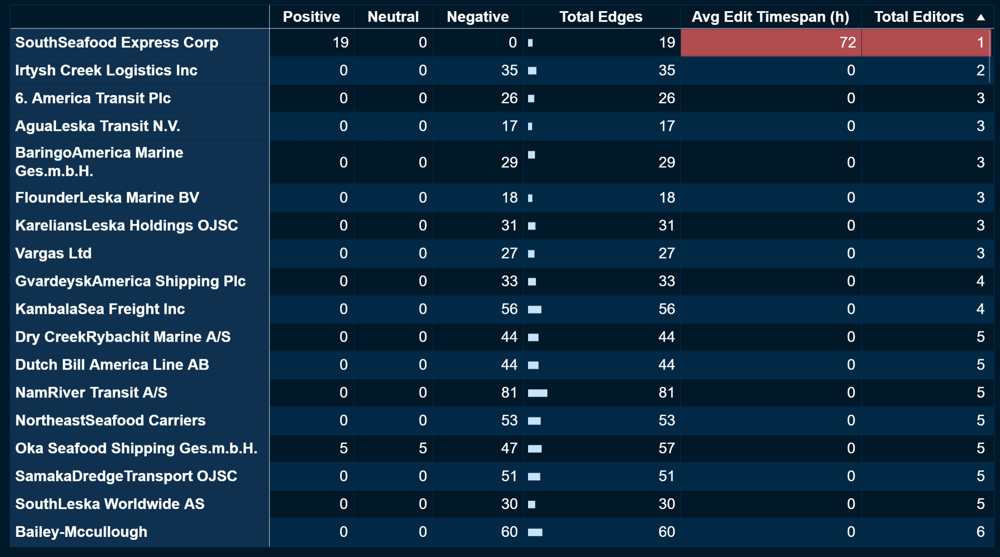
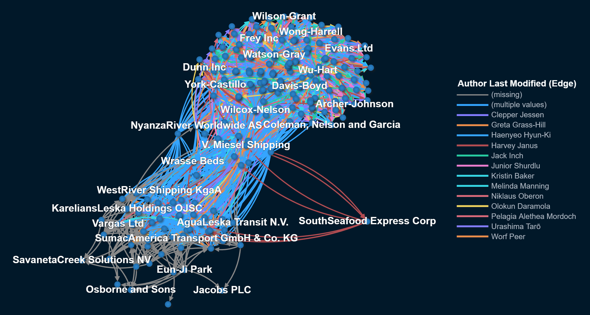
We discovered that SouthSeafood Express is not prominently featured in the article titles and is only briefly mentioned in them. The articles associated with SouthSeafood Express actually pertains to Jones Group (ID of Jones Group__0_0__<paper>), which indicate that Jones Group is making efforts to improve its sustainable fishing practices despite a negative overall article sentiment score. These articles are quite extensive and would require a significant amount of time to read through. It is possible that Harvey aims to protect SouthSeafood Express's reputation by complicating the information available in the graph. For instance, if someone were looking into SouthSeafood Express but encountered an article about Jones Group instead, they might initially disregard it. However, further exploration would reveal numerous lengthy articles, possibly designed to discourage deeper investigation.
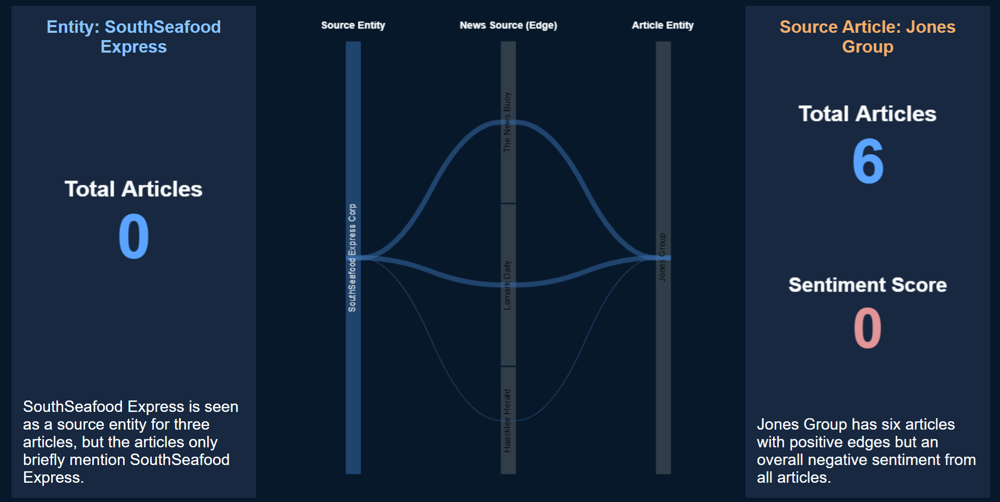
Although we cannot conclusively state that Harvey Janus is acting maliciously within the group, indications suggest he may be introducing bias into the knowledge graph. In light of SouthSeafood Express facing charges for illegal fishing practices, yet these are not reflected in the knowledge graph, we suspect Harvey Janus is operating in bad faith. Therefore, we recommend further investigation into his editing practices, including additional audits.